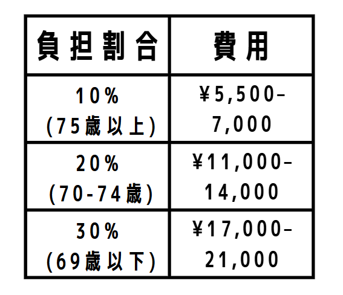

適切かつ必要な医療を届ける
一人一人の現状に合わせることはもちろんですが、ガイドラインに則った標準治療を提供していきます。また、不必要な検査や不必要な外部受診を極力減らし、患者さんだけではなくご家族・施設職員、ひいては関係する医療従事者の負担も軽減できる医療を提供していきます。
訪問診療・在宅診療を行うクリニックです。
定期訪問：月～金 9:00～18:00
往診・電話相談：24時間対応
外来：水 9:00~12:00
※外来は予約制になります
※在留外国人にも対応（韓国語・英語可）
内科・救急科
新宿区、渋谷区、中野区、千代田区、港区、豊島区、文京区
その他地域要相談
血液検査、尿検査、各種細菌学的検査 等
縫合、関節内注射（ヒアルロン酸）、胸水・腹水穿刺、在宅酸素療法・人工呼吸器療法輸液・注射
胃婁・経管栄養・中心静脈栄養法、気管カニューレ・尿道カテーテル・等の各種カテーテルの交換および管理 等

一人一人の現状に合わせることはもちろんですが、ガイドラインに則った標準治療を提供していきます。また、不必要な検査や不必要な外部受診を極力減らし、患者さんだけではなくご家族・施設職員、ひいては関係する医療従事者の負担も軽減できる医療を提供していきます。
病状や今後の見通しについて想像ができるようにわかりやすく説明していきます。ご本人とご家族のご希望についても細やかに話し合い、治療方針や急な状態変化の時の対応も決めていきます。何かあっても慌てずに対応でき、納得のできる医療を提供していきます。
患者さんに寄り添うことはもちろんですが、心身ともに健康な医療従事者がいてこそ、患者さんにもっと寄り添える医療を提供できると思っています。関わる全ての方に優しい医療提供を目指していきます。
〈病院からのご紹介の場合〉
積極的に退院前カンファレンスに参加し、訪問診療へスムーズに移行いたします。
〈外来から訪問診療へ切り替える場合〉
当院医師が担当医の外来に同行可能です。3者での面談を行い、訪問診療へスムーズに移行いたします。
ご検討中の方は、お気軽に下記電話番号・メールアドレスよりお問合せください。
病院名：飯田橋ホームクリニック
住所：〒162-0822 東京都新宿区下宮比町2-18-208
地下鉄飯田橋駅 B1又はC1出口から徒歩５分
電話番号：050-5367-3116
FAX番号：050-3588-2615
メールアドレス：info@iidabashi-home-clinic.jp
※入口のインターホンで208の呼び出しをお願いします。 当院スタッフがオートロックを解除いたしますので208までお進みください。
※当院医師が定期訪問や往診対応で留守にしていることもあり、 すぐに対応できない場合がございます。ご了承ください。